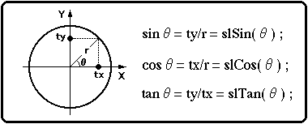
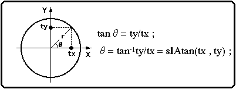

★SGL User's Manual
★PROGRAMMER'S TUTORIAL
★SGL User's Manual
★PROGRAMMER'S TUTORIAL
本章では、ＳＧＬがサポートする各種演算用ライブラリ関数の紹介をします。
図11-1 三角関数イメージ

図11-2 “slAtan”イメージ

┌─● ベクトル内積戻り値 ●───────────────────────────┐ │Ａ（Ｘ１，Ｙ１，Ｚ１）＊Ｂ（Ｘ２，Ｙ２，Ｚ２）＝Ｘ１＊Ｘ２＋Ｙ１＊Ｙ２＋Ｚ１＊Ｚ２│ │ ＝Ｒｅｔｕｒｎ Ｖａｌｕｅ │ └─────────────────────────────────────────┘
| １０進数 | ＢＣＤ | １６進数 | |
|---|---|---|---|
| 表 記 | ９２ | ０ｘ９２ | ０ｘ５ＣＨ |
関数型 | 関 数 名 | パ ラ メ ー タ | 機 能 |
|---|---|---|---|
| FIXED | slDivFX | FIXED a,FIXED b | 割り算(a/b) |
| FIXED | slMulFX | FIXED a,FIXED b | 掛け算(a*b) |
| FIXED | slSquartFX | FIXED sqrtfx | 符号なし固定小数点の平方根 |
| Uint32 | slSquart | Uint32 sqrt | 符号なし整数の平方根 |
| FIXED | slSin | ANGLE angs | 指定角に対する正弦値を返す |
| FIXED | slCos | ANGLE angc | 指定角に対する余弦値を返す |
| FIXED | slTan | ANGLE angt | 指定角に対するタンジェント値を返す |
| ANGLE | slAtan | FIXED tx,FIXED ty | 指定された方向の角度を返す |
| FIXED | slCalcPoint | FIXED zx,cy,cz,FIXED *ret | カレントマトリクスに指定したポイントを掛けて返す |
| FIXED | slInnerProduct | VECTOR a,VECTOR b | ベクトルの内積をとる |
| Uint32 | slDec2Hex | Uint32 val | BCDコードから16進コードへの変換 |
| Uint32 | slHex2Dec | Uint32 val | 16進コードからBCDコードへの変換 |
| Uint16 | slAng2Hex | ANGLE ang | ANGLEコードから16進コードへの変換 |
| Uint16 | slAng2Dec | ANGLE ang | ANGLEコードからBCDコードへの変換 |
| FIXED | slAng2FX | ANGLE ang | ANGLEコードからFIXEDコードへの変換 |
★SGL User's Manual
★PROGRAMMER'S TUTORIAL